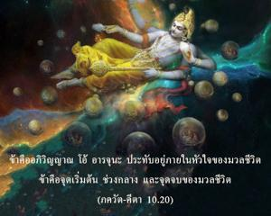
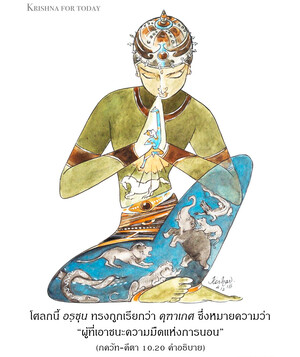

ข้าคืออภิวิญญาณ โอ้ อรฺชุน ประทับอยู่ภายในหัวใจของมวลชีวิต ข้าคือจุดเริ่มต้น ช่วงกลาง และจุดจบของมวลชีวิต


โศลกนี้ อรฺชุน ทรงถูกเรียกว่า คุฑาเกศ ซึ่งหมายความว่า “ผู้ที่เอาชนะความมืดแห่งการนอน” สำหรับพวกที่นอนหลับอยู่ในความมืดแห่งอวิชชาเป็นไปไม่ได้ที่จะเข้าใจว่า องค์ภควานฺทรงปรากฏพระวรกายหลากหลายวิธีทั้งในโลกทิพย์และโลกวัตถุได้อย่างไร องค์กฺฤษฺณทรงเรียก อรฺชุน เช่นนี้มีความสำคัญเพราะ อรฺชุน ทรงอยู่เหนือความมืดนี้ องค์กฺฤษฺณทรงตกลงที่จะอธิบายถึงความมั่งคั่งอันหลากหลายของพระองค์
ก่อนอื่นองค์กฺฤษฺณทรงให้ข้อมูลกับ อรฺชุน ว่าพระองค์ทรงเป็นดวงวิญญาณของปรากฏการณ์ในจักรวาลทั้งหมด โดยผ่านทางภาคที่แบ่งแยกเบื้องต้นของพระองค์ ก่อนการสร้างโลกวัตถุนั้นภาคที่แบ่งแยกอันสมบูรณ์ขององค์ภควานฺทรงรับเอาอวตาร ปุรุษ และจากองค์นี้ทุกสิ่งทุกอย่างจึงเริ่มขึ้น ดังนั้นพระองค์ทรงเป็น อาตฺมา ดวงวิญญาณของ มหตฺ - ตตฺตฺว ธาตุต่างๆของจักรวาล พลังงานวัตถุทั้งหมดไม่ใช่แหล่งกำเนิดของการสร้าง อันที่จริง มหา-วิษฺณุ ทรงเข้าไปใน มหตฺ-ตตฺตฺว พลังงานวัตถุทั้งหมดพระองค์ทรงเป็นดวงวิญญาณ เมื่อ มหา-วิษฺณุ ทรงเข้าไปในจักรวาลต่างๆที่ปรากฏจากนั้นทรงปรากฏเป็นอภิวิญญาณประทับอยู่ในทุกๆชีวิต เราได้มีประสบการณ์ว่าร่างกายส่วนตัวของสิ่งมีชีวิตเป็นอยู่ได้ก็เนื่องมาจากประกายวิญญาณที่ปรากฏอยู่ หากประกายวิญญาณไม่อยู่ร่างกายจะไม่สามารถพัฒนาขึ้นมาได้นอกจากว่าดวงวิญญาณสูงสุดองค์กฺฤษฺณจะเสด็จเข้าไป ดังที่ได้กล่าวไว้ใน สุพาล อุปนิษทฺ ว่า ปฺรกฺฤตฺยฺ-อาทิ-สรฺว-ภูตานฺตรฺ-ยามี สรฺว-เศษี จ นารายณห์ “บุคลิกภาพสูงสุดแห่งพระเจ้าทรงปรากฏในฐานะอภิวิญญาณในจักรวาลทั้งหลายที่ปรากฏ”
ปุรุษ-อวตาร ทั้งสามอธิบายไว้ใน ศฺรีมทฺ-ภาควตมฺ และได้อธิบายไว้ใน สาตฺวต-ตนฺตฺร เช่นกัน วิษฺโณสฺ ตุ ตฺรีณิ รูปาณิ ปุรุษาขฺยานฺยฺ อโถ วิทุห์ บุคลิกภาพสูงสุดแห่งพระเจ้าทรงปรากฏในสามลักษณะ การโณทก-ศายี วิษฺณุ, ครฺโภทก-ศายี วิษฺณุ และ กฺษีโรทก-ศายี วิษฺณุ ในปรากฏการณ์ทางวัตถุนี้ มหา-วิษฺณุ หรือ การโณทก-ศายี วิษฺณุ พฺรหฺม-สํหิตา (5.47) อธิบายว่า ยห์ การณารฺณว-ชเล ภชติ สฺม โยค-นิทฺรามฺ องค์ภควานฺ กฺฤษฺณแหล่งกำเนิดของแหล่งกำเนิดทั้งปวงทรงบรรทมอยู่ในมหาสมุทรจักรวาลในรูป มหา-วิษฺณุ ฉะนั้นบุคลิกภาพสูงสุดแห่งพระเจ้าทรงเป็นจุดเริ่มต้นของจักรวาลนี้ ทรงเป็นผู้ดำรงรักษาปรากฏการณ์แห่งจักรวาล และทรงเป็นจุดจบของพลังงานทั้งหมด